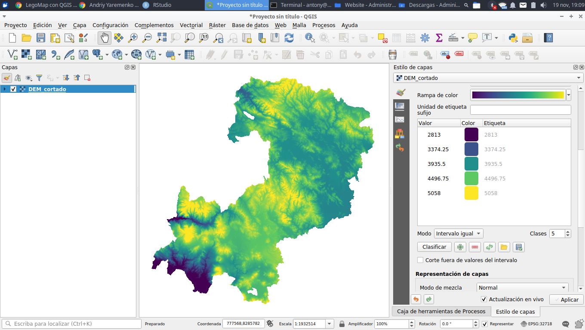
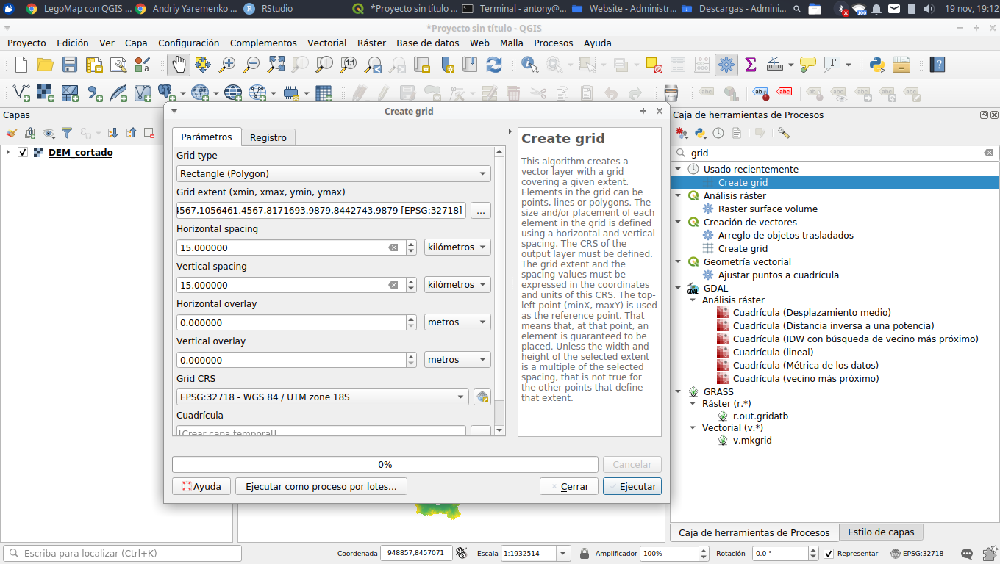
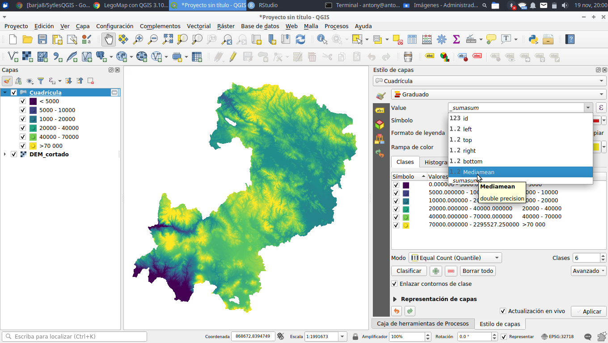
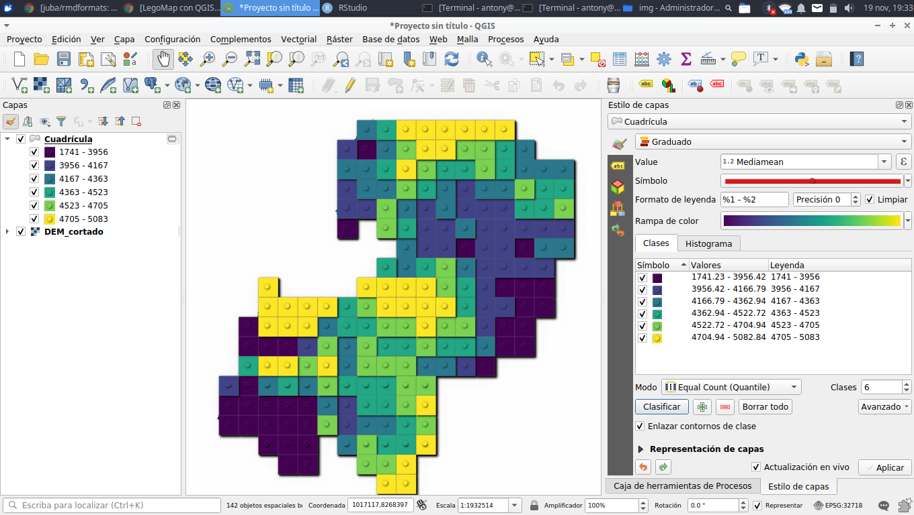

Procedimientos:
Primer paso: Como insumo primodrial tenemos un dato espacial de preferencia de tipo raster , esto por valores continuos que posee para tener una mayor discriminación al momento de elaborar el LegoMap, en este caso vamos a utilizar un DEM(SRTM) la cual ya está delimitida por nuestro ámbito de estudio.

Segundo paso: Vamos hacer un grillado de 15km x 15km (va a denpender de tu ámbito de estudio) de una forma rectagular (opcional puedes escoger otro tipo de geometría) que abarque todos los límite del ámbito de estudio.


Tercer paso: Vamos a emplear el grillado creado para extraer los valores promedios de la altitud para cada cuadrícula, esto mediante la herramienta estadística zonal, y posteriormente vamos a seleccionar y eliminar los valores vacios de cada cuadrícula.


Cuarto paso: Vamos a cargar el estilo de QLego ya elaborado la cual está ubicado en el siguiente enlace StyleQGIS, y posteriormente vamos a seleccionar el campo a representar y por último le damos nuevamente click a clasificar.



Quinto paso: Finalmente vamos a elaborar nuestra layout para posteriormente lo exportalo en un formato .png como se muestra en la siguiente imágen